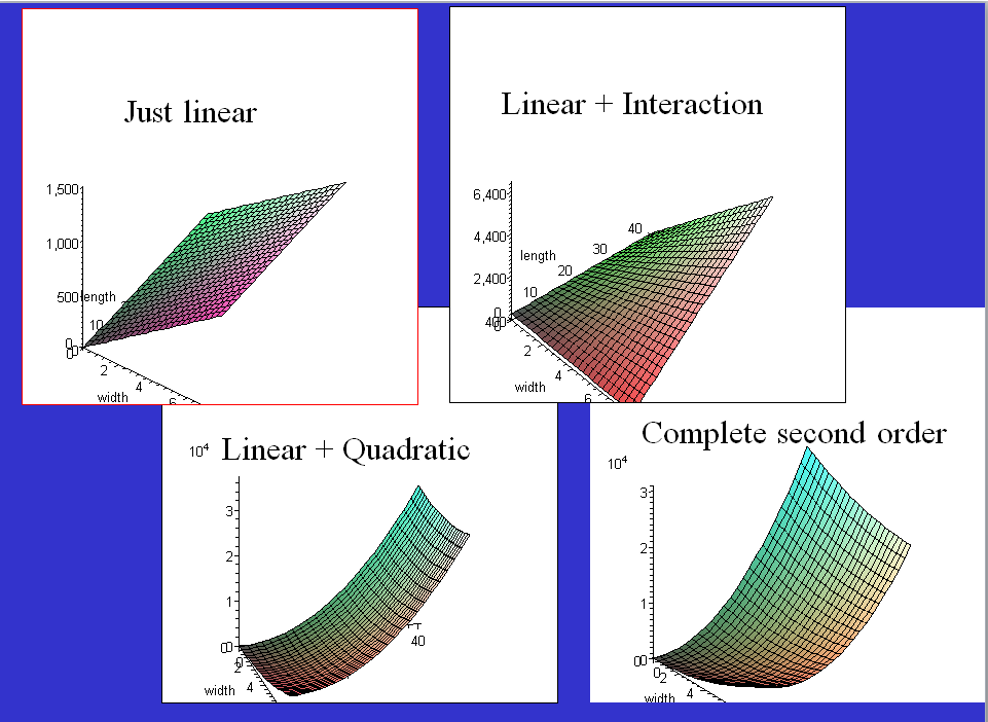

Chapter 3: Multiple Regression
Part 3: Sections 3.4-3.5
Statistical Modeling
Outline
Interaction model
Polynomial regression
- Quadratic model
Second-order model
Multicollinearity
- Variance Inflation Factor (VIF)
Funnel Data:
Prep Data for 2-sample analysis
Interaction
Recall the funnel data model for two regression lines:
\[ \text{tswirl} = \beta_0 + \beta_1 (\text{dist}) + \beta_2 (\text{funnel.hi}) + \beta_3 (\text{dist}\cdot \text{funnel.hi}) + \epsilon \]
- The product term \(\beta_3 (\text{dist}\cdot \text{funnel.hi})\) allows for different effects of distance for low and high settings.
Interaction: When the relationship between two variables changes depending on a third variable.
- Consider adding a product term to account for interactions where the context suggests it.
Fish Weight Analysis
Example 3.11
Dataset: Perch (measurements for 56 fish)
Predictors:
Length,Width(in cm)Response:
Weight(in gm)
- Fit a two-predictor model with an interaction.
- Questions:
- Why might the product of the two explanatory variables be important here?
- What does the product represent?
- Why might the product of the two explanatory variables be important here?
Example R Code for Perch Data
Call:
lm(formula = Weight ~ Length + Width + I(Length * Width), data = Perch)
Residuals:
Min 1Q Median 3Q Max
-140.106 -12.226 1.230 8.489 181.408
Coefficients:
Estimate Std. Error t value Pr(>|t|)
(Intercept) 113.9349 58.7844 1.938 0.058 .
Length -3.4827 3.1521 -1.105 0.274
Width -94.6309 22.2954 -4.244 9.06e-05 ***
I(Length * Width) 5.2412 0.4131 12.687 < 2e-16 ***
---
Signif. codes: 0 '***' 0.001 '**' 0.01 '*' 0.05 '.' 0.1 ' ' 1
Residual standard error: 44.24 on 52 degrees of freedom
Multiple R-squared: 0.9847, Adjusted R-squared: 0.9838
F-statistic: 1115 on 3 and 52 DF, p-value: < 2.2e-16Example R Code for Perch Data
Points to note:
Use of
I()to create product term without creating a new variable.Interpretation of coefficient of interaction.
Compare “effect” of an increase in
Widthfor different values ofLengthFor example: write the model for different values of
Length(e.g., 20 cm and 40 cm)Note difference in effect of an extra 1cm in
Width.
Example R Code for Perch Data
Analysis of Variance Table
Response: Weight
Df Sum Sq Mean Sq F value Pr(>F)
Length 1 6118739 6118739 3126.571 < 2.2e-16 ***
Width 1 110593 110593 56.511 7.416e-10 ***
I(Length * Width) 1 314997 314997 160.958 < 2.2e-16 ***
Residuals 52 101765 1957
---
Signif. codes: 0 '***' 0.001 '**' 0.01 '*' 0.05 '.' 0.1 ' ' 1Example R Code for Perch Data

- Consider
log(Weight)given non-constant variance.
Example: State SAT Scores
Response variable \((Y)\):
- SAT state average combined SAT score
Potential predictors \((X)\):
Takers: % taking SAT examExpend: spending per student ($100s)
Data: state_sat
Results of Fitting Linear Model


\(\Longrightarrow\) Consider a “curved” line.
Polynomial Regression
For a single predictor \(X\), consider:
\[ Y = \beta_0 + \beta_1 X + \beta_2 X^2 + \cdots + \beta_p X^p + \epsilon\\[1ex] \]
Special cases:
\[ \begin{align} Y &= \beta_0 + \beta_1 X + \epsilon & \text{(linear)}\\[1ex] Y &= \beta_0 + \beta_1 X + \beta_2 X^2 +\epsilon &\text{(quadratic)}\\[1ex] Y &= \beta_0 + \beta_1 X + \beta_2 X^2 +\beta_3 X^3 +\epsilon &\text{(cubic)} \end{align} \]
Caution: Beware of “overfitting” with large powers \(p\).
Fitting a Polynomial Regression in R
Method 1:
- Use
mutate()to create new columns with the powers of the predictor variable.
Quadratic Model for SAT
Call:
lm(formula = SAT ~ Takers + I(Takers^2), data = state_sat)
Residuals:
Min 1Q Median 3Q Max
-83.015 -16.636 0.783 22.167 55.714
Coefficients:
Estimate Std. Error t value Pr(>|t|)
(Intercept) 1053.13112 9.27372 113.561 < 2e-16 ***
Takers -7.16159 0.89220 -8.027 2.32e-10 ***
I(Takers^2) 0.07102 0.01405 5.055 6.99e-06 ***
---
Signif. codes: 0 '***' 0.001 '**' 0.01 '*' 0.05 '.' 0.1 ' ' 1
Residual standard error: 29.93 on 47 degrees of freedom
Multiple R-squared: 0.8289, Adjusted R-squared: 0.8216
F-statistic: 113.8 on 2 and 47 DF, p-value: < 2.2e-16Fitted model: \(\quad\widehat{\text{SAT}} = 1053.1 -7.161(\text{Takers})+0.0710(\text{Takers}^2)\)
SAT data: Plot the Quadratic Model

SAT Data: Residual Plot

Guidelines for Choosing the Polynomial Degree
Use the minimum degree needed to capture the structure of the data.
Check the \(t\) test of the coefficient for the highest power.
Keep lower powers even if they are not “significant.”
Tip
If you include \(x^p\), keep \(1, x, x^2, \dots, x^{p-1}\) so the model is hierarchical; then the test of the highest-degree term answers the right question: “Do we need more curvature than the lower-degree model already provides?”

Complete Second Order Models
Definition: A complete second-order model for two predictors would be \[ Y = \beta_0 + \beta_1 X_1 + \beta_2 X_2 + \beta_3 X_1^2 + \beta_4 X_2^2 + \beta_5 X_1X_2 + \epsilon \]
Allows for curvature in both variables and the possibility of interaction.
Linear and quadratic models can be obtained by setting certain \(\beta_i=0\).
Example: Try a full second-order model for SAT data
Visualizing Second-Order Models
Example: Second Order Model for SAT Data
Call:
lm(formula = SAT ~ Takers + Expend + I(Takers^2) + I(Expend^2) +
I(Takers * Expend), data = state_sat)
Residuals:
Min 1Q Median 3Q Max
-50.472 -13.535 1.023 8.866 60.870
Coefficients:
Estimate Std. Error t value Pr(>|t|)
(Intercept) 893.66283 36.14094 24.727 < 2e-16 ***
Takers -7.05561 0.83740 -8.426 9.96e-11 ***
Expend 10.33333 2.49600 4.140 0.000155 ***
I(Takers^2) 0.07725 0.01328 5.816 6.28e-07 ***
I(Expend^2) -0.11775 0.04426 -2.660 0.010851 *
I(Takers * Expend) -0.03344 0.03716 -0.900 0.373087
---
Signif. codes: 0 '***' 0.001 '**' 0.01 '*' 0.05 '.' 0.1 ' ' 1
Residual standard error: 23.68 on 44 degrees of freedom
Multiple R-squared: 0.8997, Adjusted R-squared: 0.8883
F-statistic: 78.96 on 5 and 44 DF, p-value: < 2.2e-16Example: Can the model be simplified?
Do we need the interaction?
Do we need both quadratic terms?
Do we even need the
Expendterms?
Stay tuned for the nested \(F\) test (Section 3.6)
Multicollinearity
Mulitcollinearity
What is it?
- Two or more predictors are strongly associated with each other.
Why is it a problem?
- Individual coefficients and \(t\) tests can be deceptive and unreliable.
Bad news: No cures, just treatments!
Effects of Multicollinearity
If predictors are highly correlated among themselves, then:
The regression coefficients and tests can be extremely variable and difficult to interpret individually.
One variable alone might work as well as many.
- Approach may depend on the goal of the analysis: description vs prediction.
How to Detect Multicollinearity?
1. Correlation Matrix
Dataset: MidtermFinalA (class scores)
Response:
Finalexam scorePredictors:
Quizaverage,Classparticipation, andMidtermscore
Correlation Matrix for MidtermFinalA
- Note high correlation between
MidtermandQuiz
Multicollinearity: Simulation
Explore stability of regression results in the presence of multicollinearity
QuizandMidtermare relatedClassparticipation is independent of the others.
Link to download SimMultiFinal.R
How to Detect Multicollinearity?
2. Variance Inflation Factor (VIF)
\[ \text{VIF} = \frac{1}{1-R_i^2} \] where \(R_i^2\) is the \(R^2\) for the regression predicting variable \(X_i\) from the other predictor variables.
Beware if \(\text{VIF}>5\) \(\Longleftrightarrow\) \(R_i^2>80\%\).
Tip
Obtain \(\text{VIF}\) using car package in R.
Example: MidtermFinalA Dataset
# output-location:fragment
finalmodel <- lm(Final ~ Midterm + Quiz + Class, data = MidtermFinalA)
summary(finalmodel)
Call:
lm(formula = Final ~ Midterm + Quiz + Class, data = MidtermFinalA)
Residuals:
Min 1Q Median 3Q Max
-19.35 -6.17 0.41 5.90 17.41
Coefficients:
Estimate Std. Error t value Pr(>|t|)
(Intercept) 19.158 9.679 1.98 0.058 .
Midterm 1.271 1.091 1.17 0.254
Quiz 0.499 2.024 0.25 0.807
Class -0.117 0.232 -0.51 0.616
---
Signif. codes: 0 '***' 0.001 '**' 0.01 '*' 0.05 '.' 0.1 ' ' 1
Residual standard error: 9.93 on 27 degrees of freedom
Multiple R-squared: 0.575, Adjusted R-squared: 0.527
F-statistic: 12.2 on 3 and 27 DF, p-value: 3.22e-05Midterm Quiz Class
19.2840 18.8098 1.1158 Output for Checking VIF calculation
- The calculation agrees up to rounding: \(\text{VIF} = \frac{1}{1-.948} = 19.23\)
Call:
lm(formula = Midterm ~ Quiz + Class, data = MidtermFinalA)
Residuals:
Min 1Q Median 3Q Max
-3.478 -1.127 0.141 1.004 3.939
Coefficients:
Estimate Std. Error t value Pr(>|t|)
(Intercept) 2.9568 1.5812 1.87 0.072 .
Quiz 1.8026 0.0832 21.67 <2e-16 ***
Class 0.0484 0.0391 1.24 0.226
---
Signif. codes: 0 '***' 0.001 '**' 0.01 '*' 0.05 '.' 0.1 ' ' 1
Residual standard error: 1.72 on 28 degrees of freedom
Multiple R-squared: 0.948, Adjusted R-squared: 0.944
F-statistic: 256 on 2 and 28 DF, p-value: <2e-16What to Do if You Have Multicollinearity?
Choose a better set of predictors.
Eliminate some of the redundant predictors.
Combine predictors to create a (possibly weighted) scale.
“Ignore” the individual coefficients and tests if prediction is the primary goal.
Tip
The best remedies often depend on the purpose of the analysis.